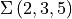
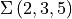
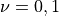

Example 5.5.3
In this notebook we will demonstrate an application of the regularized indefinite theta function formula for the computation of the  invariants of , with and without defects. We will compare these results with the invariants on the  and relevant
invariants of , with and without defects. We will compare these results with the invariants on the  and relevant  -series stemming from modularity. We will compare the invariants on the positive manifold with [2].
-series stemming from modularity. We will compare the invariants on the positive manifold with [2].
The invariants of the integer homology sphere is known to transform in the Weil representation identified by  . The -series making up this representation are
. The -series making up this representation are
[15]:
from pyPlumbing import Plumbing
import itertools
load("weil_rep_fncs.sage")
m = 30
K = [1,6,10,15]
for idxl,sgnl in zip(*weil_reps(m,K)):
print(f'theta_{m},{idxl[0]}', sum(round(sgn)*false_theta(m,idx,8) for idx,sgn in zip(idxl,sgnl)))
theta_30,1 -1.0*q^2421.008333333333 - 1.0*q^2332.008333333333 - 1.0*q^2262.008333333333 - 1.0*q^2176.008333333333 + 1.0*q^2159.008333333333 + 1.0*q^2075.008333333333 + 1.0*q^2009.0083333333334 + 1.0*q^1928.0083333333334 - 2.0*q^1912.0083333333334 - 2.0*q^1833.0083333333334 - 2.0*q^1771.0083333333334 - 2.0*q^1695.0083333333334 + 2.0*q^1680.0083333333334 + 2.0*q^1606.0083333333334 + 2.0*q^1548.0083333333334 + 2.0*q^1477.0083333333334 - 2.0*q^1463.0083333333334 - 2.0*q^1394.0083333333334 - 2.0*q^1340.0083333333334 - 2.0*q^1274.0083333333334 + 2.0*q^1261.0083333333334 + 2.0*q^1197.0083333333334 + 2.0*q^1147.0083333333334 + 2.0*q^1086.0083333333334 - 2.0*q^1074.0083333333334 - 2.0*q^1015.0083333333333 - 2.0*q^969.0083333333333 - 2.0*q^913.0083333333333 + 2.0*q^902.0083333333333 + 2.0*q^848.0083333333333 + 2.0*q^806.0083333333333 + 2.0*q^755.0083333333333 - 2.0*q^745.0083333333333 - 2.0*q^696.0083333333333 - 2.0*q^658.0083333333333 - 2.0*q^612.0083333333333 + 2.0*q^603.0083333333333 + 2.0*q^559.0083333333333 + 2.0*q^525.0083333333333 + 2.0*q^484.0083333333333 - 2.0*q^476.0083333333333 - 2.0*q^437.0083333333333 - 2.0*q^407.0083333333333 - 2.0*q^371.0083333333333 + 2.0*q^364.0083333333333 + 2.0*q^330.0083333333333 + 2.0*q^304.0083333333333 + 2.0*q^273.0083333333333 - 2.0*q^267.0083333333333 - 2.0*q^238.00833333333333 - 2.0*q^216.00833333333333 - 2.0*q^190.00833333333333 + 2.0*q^185.00833333333333 + 2.0*q^161.00833333333333 + 2.0*q^143.00833333333333 + 2.0*q^122.00833333333334 - 2.0*q^118.00833333333334 - 2.0*q^99.00833333333334 - 2.0*q^85.00833333333334 - 2.0*q^69.00833333333334 + 2.0*q^66.00833333333334 + 2.0*q^52.00833333333333 + 2.0*q^42.00833333333333 + 2.0*q^31.008333333333333 - 2.0*q^29.008333333333333 - 2.0*q^20.008333333333333 - 2.0*q^14.008333333333333 - 2.0*q^8.008333333333333 + 2.0*q^7.008333333333334 + 2.0*q^3.0083333333333333 + 2.0*q^1.0083333333333333 + 2.0*q^0.008333333333333333
theta_30,7 -1.0*q^2367.4083333333333 - 1.0*q^2314.4083333333333 - 1.0*q^2279.4083333333333 - 1.0*q^2227.4083333333333 + 1.0*q^2108.4083333333333 + 1.0*q^2058.4083333333333 + 1.0*q^2025.4083333333333 + 1.0*q^1976.4083333333333 - 2.0*q^1864.4083333333333 - 2.0*q^1817.4083333333333 - 2.0*q^1786.4083333333333 - 2.0*q^1740.4083333333333 + 2.0*q^1635.4083333333333 + 2.0*q^1591.4083333333333 + 2.0*q^1562.4083333333333 + 2.0*q^1519.4083333333333 - 2.0*q^1421.4083333333333 - 2.0*q^1380.4083333333333 - 2.0*q^1353.4083333333333 - 2.0*q^1313.4083333333333 + 2.0*q^1222.4083333333333 + 2.0*q^1184.4083333333333 + 2.0*q^1159.4083333333333 + 2.0*q^1122.4083333333333 - 2.0*q^1038.4083333333333 - 2.0*q^1003.4083333333333 - 2.0*q^980.4083333333333 - 2.0*q^946.4083333333333 + 2.0*q^869.4083333333333 + 2.0*q^837.4083333333333 + 2.0*q^816.4083333333333 + 2.0*q^785.4083333333333 - 2.0*q^715.4083333333333 - 2.0*q^686.4083333333333 - 2.0*q^667.4083333333333 - 2.0*q^639.4083333333333 + 2.0*q^576.4083333333333 + 2.0*q^550.4083333333333 + 2.0*q^533.4083333333333 + 2.0*q^508.40833333333336 - 2.0*q^452.40833333333336 - 2.0*q^429.40833333333336 - 2.0*q^414.40833333333336 - 2.0*q^392.40833333333336 + 2.0*q^343.40833333333336 + 2.0*q^323.40833333333336 + 2.0*q^310.40833333333336 + 2.0*q^291.40833333333336 - 2.0*q^249.40833333333333 - 2.0*q^232.40833333333333 - 2.0*q^221.40833333333333 - 2.0*q^205.40833333333333 + 2.0*q^170.40833333333333 + 2.0*q^156.40833333333333 + 2.0*q^147.40833333333333 + 2.0*q^134.40833333333333 - 2.0*q^106.40833333333333 - 2.0*q^95.40833333333333 - 2.0*q^88.40833333333333 - 2.0*q^78.40833333333333 + 2.0*q^57.40833333333333 + 2.0*q^49.40833333333333 + 2.0*q^44.40833333333333 + 2.0*q^37.40833333333333 - 2.0*q^23.408333333333335 - 2.0*q^18.408333333333335 - 2.0*q^15.408333333333333 - 2.0*q^11.408333333333333 + 2.0*q^4.408333333333333 + 2.0*q^2.408333333333333 + 2.0*q^1.4083333333333334 + 2.0*q^0.4083333333333333
We compare these with the invariants computed from plumbing.
[10]:
P = Plumbing.from_Brieskorn([2,3,5])
b = P.trivial_spin_c(["A",1])
for w in [0,1]:
zhat = P.zhat(["A",1],b,20,wilson=[vector([0])]*3+[vector([w])])
print(zhat)
q^(-3/2)(1 - 1q^(1) - 1q^(3) - 1q^(7) + 1q^(8) + 1q^(14) + 1q^(20) + O(q^21))
q^(-5/4)(1 - 1q^(1) - 1q^(2) - 1q^(4) + 1q^(11) + 1q^(15) + 1q^(18) + O(q^19))
Following Conjecture 5, with defects in heighest weight representations  on the last node of the leg corresponding to , we get
[16]:
p = [2,3,5]
r = 1
x = 3
chi = 1
print("Z(-Sigma(2,3,3),nu=0)=",zhat_indefinte_theta(p,x,r,chi, c2=vector([3,10]), n_max=20,nu=[0,0,0]))
print("Z(-Sigma(2,3,5),nu=1)=",zhat_indefinte_theta(p,x,r,chi, c2=vector([3,10]),n_max=20,nu=[0,0,1]))
Z(-Sigma(2,3,3),nu=0)= (2 + (-2)*q + (-2)*q^2 + (-4)*q^3 + (-2)*q^4 + (-6)*q^5 + (-4)*q^6 + (-6)*q^7 + (-6)*q^8 + (-10)*q^9 + (-6)*q^10 + (-12)*q^11 + (-10)*q^12 + (-14)*q^13 + (-14)*q^14 + (-18)*q^15 + (-14)*q^16 + (-24)*q^17 + (-22)*q^18 + (-26)*q^19 + Order(q^20))/q^(1/120)
Z(-Sigma(2,3,5),nu=1)= q^(71/120)*((-2) + (-4)*q + (-4)*q^2 + (-6)*q^3 + (-6)*q^4 + (-8)*q^5 + (-8)*q^6 + (-12)*q^7 + (-10)*q^8 + (-14)*q^9 + (-16)*q^10 + (-18)*q^11 + (-18)*q^12 + (-24)*q^13 + (-24)*q^14 + (-30)*q^15 + (-30)*q^16 + (-36)*q^17 + (-38)*q^18 + (-46)*q^19 + Order(q^20))
Which match the order 5 mock theta functions of Ramanujan
[12]:
def X0_ramanujan(n_max: int = 10, q_var = var('q')):
return sum(q**n/q_pochhammer(n,q**(n+1),q) for n in range(0,n_max+1))
def X1_ramanujan(n_max: int = 10, q_var = var('q')):
return sum(q**n/q_pochhammer(n+1,q**(n+1),q) for n in range(0,n_max+1))
print("X0: ",X0_ramanujan().series(q,20))
print("X1: ",X1_ramanujan().series(q,20))
X0: 1 + 1*q + 1*q^2 + 2*q^3 + 1*q^4 + 3*q^5 + 2*q^6 + 3*q^7 + 3*q^8 + 5*q^9 + 3*q^10 + 5*q^11 + 4*q^12 + 6*q^13 + 6*q^14 + 8*q^15 + 6*q^16 + 11*q^17 + 10*q^18 + 12*q^19 + Order(q^20)
X1: 1 + 2*q + 2*q^2 + 3*q^3 + 3*q^4 + 4*q^5 + 4*q^6 + 6*q^7 + 5*q^8 + 7*q^9 + 8*q^10 + 8*q^11 + 8*q^12 + 11*q^13 + 11*q^14 + 14*q^15 + 14*q^16 + 17*q^17 + 18*q^18 + 22*q^19 + Order(q^20)
[ ]: